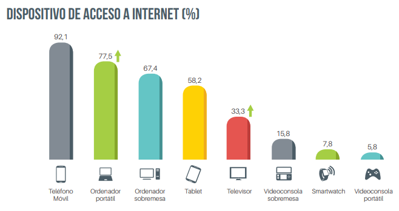
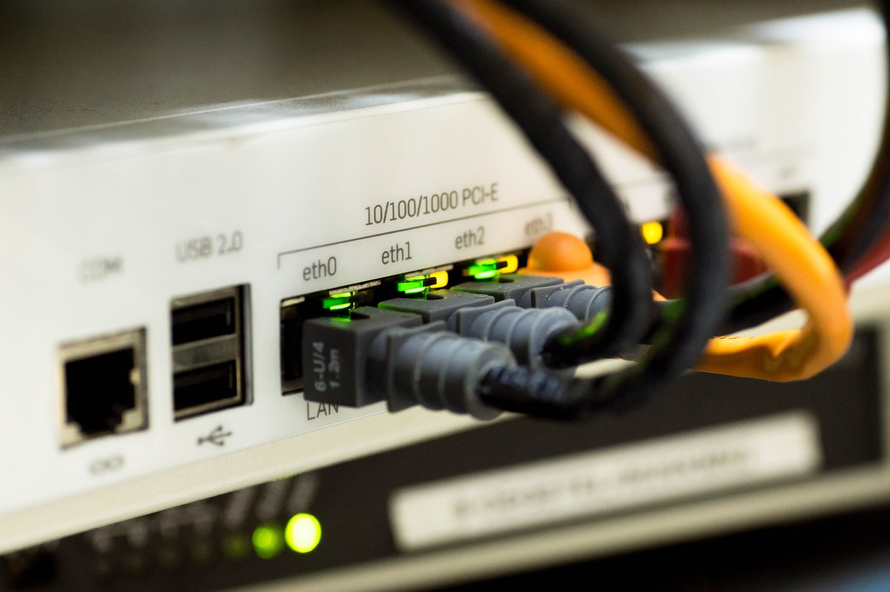

3.1. Redes cableadas y redes inalámbricas
Las primeras redes que aparecieron en el mundo de las telecomunicaciones fueron las redes telefónicas. Posteriormente, en la década de los 60, surgieron las primeras redes de datos que usaban cables como medio de transmisión. Las primeras pruebas en la transmisión inalámbrica se hicieron en las universidades de Hawai. Se creó el protocolo ALOHA para el control de un enlace compartido entre varios terminales. Una modificación de este protocolo fue la base del Ethernet que fue clave para el desarrollo y expansión de Internet.
Con el tiempo, las redes han evolucionado. Hoy día se tienen dispositivos de red más pequeños y potentes. Los usuarios optan por la conexión inalámbrica en la mayoría de los casos ya que es posible la implantación de redes de forma rápida.
Si se observa la siguiente imagen, se puede ver qué dispositivos se usan para la conexión a Internet en España. Esto puede dar una idea del uso de redes inalámbricas comparándolas con las redes cableadas.

Dispositivo de acceso a Internet
Imagen de AIMC (Asociación para la Investigración de Medios de Comunicación) (2017, octubre - diciembre). Obtenida de la infografía resumen 20ª edición (octubre-diciembre 2017). Recuperado de http://download.aimc.es/aimc/ARtu5f4e/Infografia_naveg_20.pdf
REDES CABLEADAS
Son aquellas redes que utilizan un cable como medio de transmisión. Algunos ejemplos de redes cableadas.
- Redes Ethernet especificado en el estándar IEEE 802.3.
- Redes Token Ring especificado en IEEE 802.5.
- Redes FDDI que reúne un conjunto de estándares y vienen recogidos en la ISO 9314-x.

Red
Imagen de pixabay.com (autor: Martinelle). Recuperado de https://pixabay.com/es/red-cable-ethernet-computadora-1572617.
Licencia CC0 Creative Commons. Gratis para usos comerciales. No es necesario reconocimiento.
Las redes Ethernet son la que más éxito han tenido y las que más se utilizan.
REDES ETHERNET
Las redes de área local se especifican con el estándar IEEE 802.3.
Se distinguen dos categorías: banda base y banda ancha. La banda base se refiere al uso de una señal digital para el transporte de los datos. Hay cinco estándares distintos para la banda base:
- 10Base5: Cable coaxial, dmax = 500 m
- 10Base2: Cable coaxial, dmax = 185 m
- 10BaseT: Par trenzado, dmax = 100 m
- 10BaseF: Fibra óptica, dmax = 2000 m
El primer número hace referencia a la tasa de transmisión y el último, al tipo de medio de transmisión.
Un ordenador no puede estar alejado a más de 2,5 Km de otro (atravesando los repetidores que sean necesarios para ello) y ningún camino entre dos componentes de la red puede atravesar más de 4 repetidores.
FAST ETHERNET Y GIGABIT ETHERNET
Los servicios ha ido evolucionando con el paso de los años, por lo que este estándar se ha visto obligado a evolucionar. Así, se tiene dos variantes de Ethernet: Fast Ethernet (estándar 802.3u especificado a una tasa de 100 Mbps) y Gigabit Ethernet (estándar 802.3z especificado a una tasa de 1 Gbps). Uno de los éxitos de Ethernet ha sido que cada vez que ha aparecido una nueva variante, se ha tenido como requisito indispensable su compatibilidad con las versiones anteriores con lo que se ha facilitado su implantación.
REDES INALÁMBRICAS
Las redes inalámbricas se pueden clasificar de la siguiente manera:
- Redes de área personal sin hilos (WPAN)
- Redes de área local inalámbricas (WLAN)
- Redes inalámbricas de área extensa
- Sistemas de comunicación vía satélite
- Redes WIMAX
Móvil
Imagen de pixabay.com (autor: geralt). Recuperado de https://pixabay.com/es/tel%C3%A9fono-m%C3%B3vil-enviar-nearby-sms-2224001
Licencia CC0 Creative Commons. Gratis para usos comerciales. No necesita reconocimiento.
REDES DE ÁREA PERSONAL SIN HILOS (WPAN)
Mediante el término WPAN se engloba aquellas redes donde el medio de transmisión son las ondas de radio, pero el radio de acción se limita a pocos metros.
Bluetooth es la tecnología inalámbrica que permite facilitar las comunicaciones interpersonales entre la gente a través de un enlace radio barato y de corto alcance que permite el uso de dispositivos de pequeño tamaño, bajo coste y potencia baja.
Hay otras aplicaciones de este tipo de redes entre las que se puede mencionar: las aplicaciones IRDA, las etiquetas RF o la tecnología Zigbee.
La tecnología de IRDA (Infrared Data Association) trabaja con frecuencias comprendidas en la banda infrarroja. Tuvo bastante auge hace años aunque es cierto que cada vez está siendo desplazada por otros sistemas como Bluetooth. Las principales aplicaciones de IRDA son la conexión de dispositivos mediante enlaces punto a punto con visibilidad directa y con un bajo alcance (normalmente, en torno a un metro).
La tecnología RFID (ISO 15693) es un sistema muy novedoso que puede que haga desparecer a las tradicionales etiquetas con código de barras y lector de infrarrojos. Está compuesta por unas etiquetas RF o transpondedor que pueden almacenar información y transmitirla en caso de ser interrogadas. El problema que presenta el sistema de código de barras es la necesidad de tener que enfrentar el lector con la etiqueta por lo que obliga a hacer esta acción por cada artículo o elemento haciendo que tareas básicas de comprobación de stock en un almacén resulten tediosas. Esta labor se facilita enormemente con este sistema donde un lector dotado con interfaz inalámbrico puede leer aquellas etiquetas que estén bajo su alcance.
Los chips de las mascotas utilizan este sistema.
La tecnología Zigbee está basada en el estándar IEEE 802.15.4. Está pensada para aquellos dispositivos que requieren el intercambio de datos esporádicos cuyos requerimientos de tasas de transferencias son bajos no llegando a decenas o centenas de Kbps y alcances limitados, por debajo de las decenas de metros, donde lo que prima es la portabilidad, el coste, el tamaño y un consumo de potencia reducido. Son típicos ejemplos de aplicaciones el control remoto de dispositivos, juguetes y aplicaciones del hogar.
REDES DE ÁREA LOCAL INALÁMBRICAS (WLAN)
Las aplicaciones de redes inalámbricas son soluciones para el intercambio de datos en una red donde prima la flexibilidad y la portabilidad.
No todo son ventajas ya que para este tipo de aplicaciones es necesaria una inversión inicial. Además, cuando se necesita un enlace de muy alta velocidad, es más fácil conseguirlo con un cable que de forma inalámbrica, ya que en el interfaz aire debe viajar mucha información de control para contrarrestar la inestabilidad que presenta este canal.
En general, se suelen encontrar soluciones mixtas entre redes cableadas y redes inalámbricas en distintos entornos, ya sea empresarial o doméstico. Este tipo de soluciones mixtas tratan de complementar la red cableada y llegar a aquellos sitios donde es difícil hacerlo con un cable.
REDES INALÁMBRICAS DE ÁREA EXTENSA
Las aplicaciones que usan este tipo de tecnologías están condicionadas por la velocidad del acceso que se ofrece al usuario. Esta velocidad ha ido evolucionando a lo largo del tiempo. Actualmente, se tiene la tecnología LTE o 4G que permite unas velocidades de intercambio de datos teórica de hasta 168 Mbps, aunque en la realidad la tasas que se pueden alcanzar con un móvil en la red de cualquier operador oscilan en torno a los 20 Mbps. Ya se está en pruebas con la tecnología 5G que permitirá velocidades de transferencia de datos mucho mayores.
SISTEMAS DE COMUNICACIÓN VÍA SATÉLITE
Las aplicaciones de este tipo de sistemas son muy variadas como pueden ser el acceso a Internet, la educación a distancia, radiodifusión (televisión comercial, televisión corporativa, televisión por cable, etc.) o cualquier aplicación que implique enviar información a una ubicación de difícil acceso donde es algo impensable que pueda llegar el cable.
REDES WIMAX (TECNOLOGÍA IEEE 802.16)
WiMAX es una tecnología radio de banda ancha para redes metropolitanas basadas en el estándar IEEE 802.16 y fue bautizada como WMAN (Wireless Metropolitan Area Network). Tiene un alcance de decenas de Km (teóricamente pueden llegar hasta los 45 Km) y permite unas tasas de transmisión de datos en torno a los 70 Mbps. Este tipo de tecnología se está usando actualmente en entornos rurales, en aquellas ubicaciones donde es difícil llegar con otro medio de transmisión.
Importante
Las redes inalámbricas están en auge respecto a las redes cableadas. No todo son ventajas en las redes inalámbricas. Por ejemplo, es más sencillo conseguir un enlace de muy alta velocidad con un cable (como la fibra óptica) que enviando información a través de ondas.
En las redes cableadas, destacan las redes Ethernet siendo las más populares y las que más se usan.
Las redes Ethernet han tenido que evolucionar dado que los servicios demandan cada vez mayores capacidades de transferencia de datos. Así se tienen las Fast Ethernet (100 Mbps) y las Gigabit Ethernet (1 Gbps).
Las redes inalámbricas se pueden clasificar:
- Redes de área personal sin hilos (WPAN). Destaca en este tipo de redes, la tecnología Bluetooth.
- Redes de área local inalámbricas (WLAN).
- Redes inalámbricas de área extensa. Son las redes de móviles actuales son su tecnología 4G.
- Sistema de comunicación vía satélite.
- Redes WIMAX. Esta tecnología se usa sobre todo en entornos rurales.